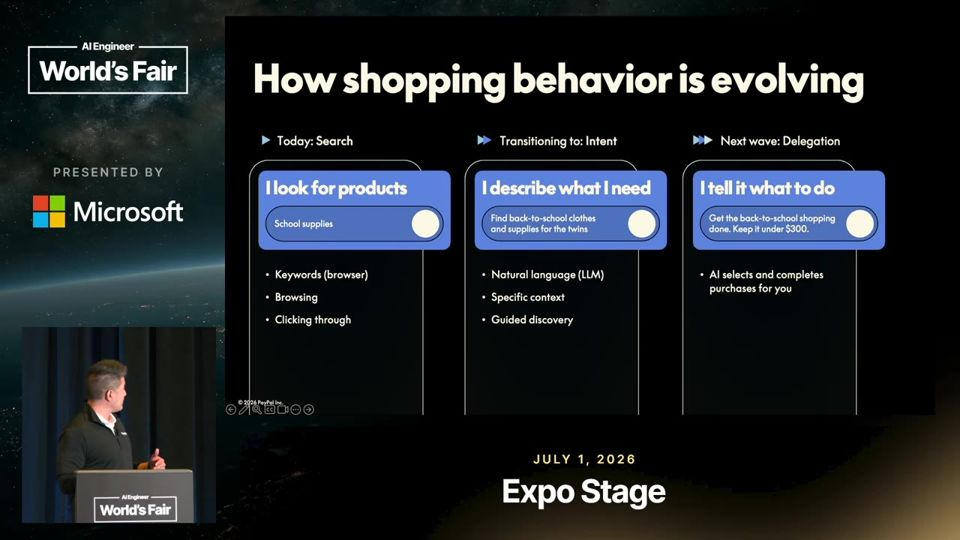
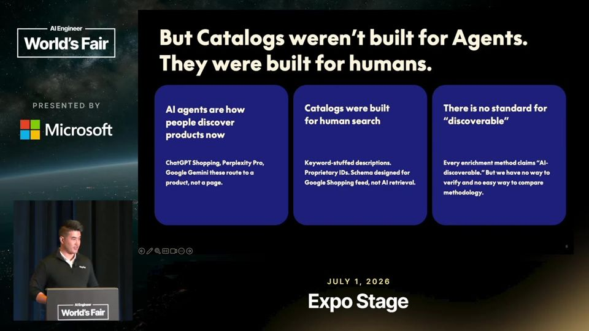
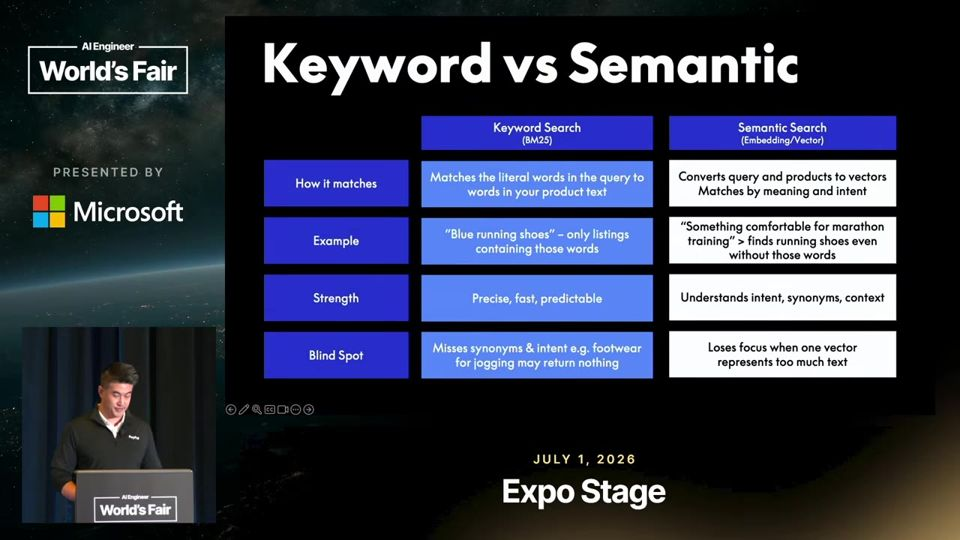
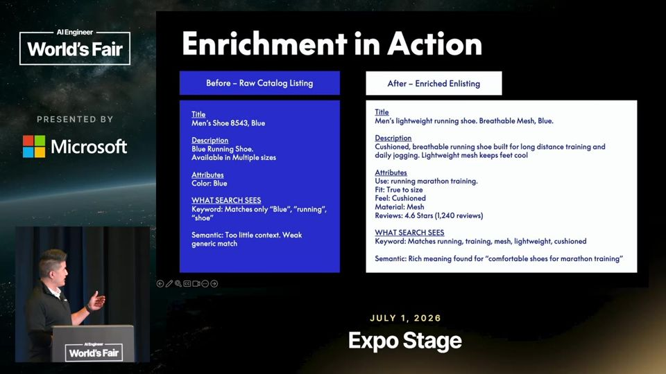

Keyword Search Is Dying. Is Your Catalog Ready for AI Agents?
Agentes de compra buscam pelo significado do pedido. Catálogo com dado estruturado e de qualidade ganha, e texto a mais atrapalha.
Em 3 frases
O PayPal diz que a compra passa da era da busca (palavras-chave) para a era da intenção (descrever a necessidade) e depois para a era da delegação (o agente compra por você).
Catálogos feitos para anúncios e SEO (otimização para buscadores) não são legíveis para agentes, e os modelos por trás deles funcionam como caixa-preta, então o PayPal rodou experimentos enriquecendo dados de lojistas.
Enriquecer ajudou, sobretudo catálogos magros, mas encher o produto de texto genérico diluiu o sinal e fez o agente alucinar. A recomendação é avaliar o próprio catálogo e priorizar conteúdo estruturado e de qualidade.
Antes de ler
- Agentic commerce comércio conduzido por agentes
- Keyword search busca por palavra-chave
- Busca semântica busca por significado, com vetores
- Busca híbrida combinação de keyword e semântica
- Enriquecimento de catálogo data enrichment de produtos
- Sindicação de catálogo envio do catálogo a plataformas de anúncio
Três eras da compra: busca, intenção, delegação
Na era da busca, o cliente digita palavras-chave e navega pelo catálogo. Na era da intenção, ele descreve a necessidade com as próprias palavras, como a filha entrando no quinto ano, e a IA traz as marcas até ele. Na era da delegação, o cliente confia nas recomendações e passa a deixar o agente executar a compra.

Catálogo feito para humanos e anúncios não serve ao agente
Lojistas costumam sindicar o catálogo para Google e Meta, num formato pensado para busca humana e anúncios. Esse formato não ajuda o agente a descobrir nem a ler o produto. Para piorar, cada agente usa um modelo diferente, com ranking próprio, e a busca vetorial nem sempre devolve o mesmo resultado. Sem estratégia clara como no SEO, o PayPal recomenda testar.

Busca por palavra-chave e busca semântica se complementam
A busca por palavra-chave é precisa, rápida e previsível, mas perde a intenção: quem busca calçado para corrida pode não ver tênis de corrida. A busca semântica converte a consulta em vetores e acha o tênis para treino de maratona sem nenhuma palavra em comum, porém é difusa e pode perder o foco. A abordagem híbrida combina as duas.

Mais 2 ideias deste talk
Exemplo: enriquecer um tênis de corrida
O produto começa com título e descrição quase vazios, só azul e tamanhos. Depois do enriquecimento, ganha título descritivo, descrição com amortecimento e respirabilidade, atributos como material em mesh e caimento fiel ao tamanho, e avaliações. A busca passa a casar com corrida, treino e mesh. Os padrões testados foram preencher atributos, dar profundidade à descrição, incluir contexto de comprador e sinais de confiança.

Mais texto não é melhor: qualidade vence volume
O baseline sem enriquecimento perdeu de forma clara. Lojistas com catálogo mais magro tiveram o maior ganho. Já empilhar texto não estruturado, como boilerplate do tipo 'bem-vindo à nossa loja, somos uma empresa familiar', diluiu o sinal. Em alguns casos o excesso de enriquecimento levou o agente a alucinar mais e piorar o resultado.
O talk é pitch de produto: o PayPal vende Agentic Commerce Services e convida ao estande no fim. Os dados de mercado (Bain, 1,1 trilhão, 39%, 4x de conversão) vêm sem metodologia, e o 693% de tráfego de referência sai truncado na legenda. Os experimentos não trazem métricas, tamanho de amostra, modelos testados nem critério de 'melhor recomendação'. O próprio palestrante diz que foi um conjunto de experimentos e que não há recomendação concreta por negócio.
O que fazer com isso
- Audite seu catálogo ou base de conteúdo e classifique como magro (poucos atributos) ou pesado em especificações antes de decidir o que enriquecer.
- Preencha atributos estruturados (material, uso, tamanho) e inclua contexto de comprador e avaliações, em vez de adicionar texto institucional.
- Monte um teste pequeno comparando recomendações de um agente com dados originais e enriquecidos, e observe se o enriquecimento aumenta alucinações.
- Se usar busca em seus produtos de IA, avalie uma abordagem híbrida (palavra-chave mais vetores) em vez de escolher só uma.